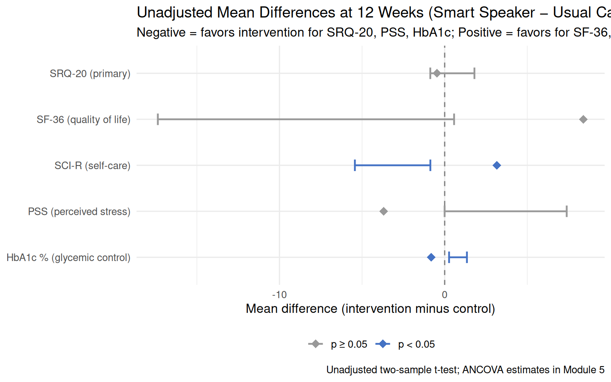

library(dplyr)
library(ggplot2)5 Module 4: Estimation and Hypothesis Testing
CRP 241 — IVAM-ED Teaching Case
5.1 Overview
This module moves from description to inference. We quantify the treatment effect using means, mean differences, 95% confidence intervals, and hypothesis tests — and we examine the critical distinction between two types of comparison that are often confused:
- Within-group change: how much did participants in one group improve?
- Between-group difference: how much more did the intervention group improve compared to the control group?
In a randomized trial, only the between-group difference is the legitimate estimate of the treatment effect. Within-group change is confounded by everything that happens to participants over time (natural history, regression to the mean, seasonal effects).
By the end of this module you should be able to:
- Compute group means and standard deviations at each time point.
- Calculate and interpret a 95% confidence interval for a mean difference.
- Perform an independent-samples t-test and interpret the p-value correctly.
- Explain why within-group change is not the treatment effect.
5.2 ———————————————————————
5.3 Setup
dat <- readRDS("../data/ivam_working.rds")
completers <- filter(dat, missing_12wk == 0) # 103 participants with follow-up data5.4 ———————————————————————
5.5 1. Group Means at Each Time Point
Start by computing the unadjusted group means for the primary outcome (SRQ-20) at baseline and at follow-up.
# Mean and SD for SRQ-20 at each time point, by group
completers |>
group_by(group_label) |>
summarise(
n = n(),
baseline_mean = round(mean(srq20_0), 2),
baseline_sd = round(sd(srq20_0), 2),
followup_mean = round(mean(srq20_12), 2),
followup_sd = round(sd(srq20_12), 2)
)# A tibble: 2 × 6
group_label n baseline_mean baseline_sd followup_mean followup_sd
<fct> <int> <dbl> <dbl> <dbl> <dbl>
1 Usual care 51 6.67 3.99 7.22 3.32
2 Smart speaker 52 7.71 3.59 6.75 3.51
Note
Compare to the published paper: Table 2 in Matzenbacher et al. (2026) reports the adjusted group means at 12 weeks (from the ANCOVA model). Your unadjusted means here will not match exactly — adjusted and unadjusted means differ whenever the groups are not perfectly balanced at baseline. Module 5 fits the ANCOVA model.
5.6 ———————————————————————
5.7 2. Within-Group Change
For each group, we can calculate the mean change from baseline to follow-up. This tells us: on average, how much did participants in this group change?
completers |>
mutate(srq20_change = srq20_12 - srq20_0) |> # negative = improved (less distress)
group_by(group_label) |>
summarise(
n = n(),
mean_change = round(mean(srq20_change), 2),
sd_change = round(sd(srq20_change), 2),
se_change = round(sd(srq20_change) / sqrt(n()), 3),
ci_lo = round(mean(srq20_change) - qt(0.975, df = n() - 1) * sd(srq20_change) / sqrt(n()), 2),
ci_hi = round(mean(srq20_change) + qt(0.975, df = n() - 1) * sd(srq20_change) / sqrt(n()), 2)
) |>
mutate(ci = paste0("(", ci_lo, ", ", ci_hi, ")")) |>
select(group_label, n, mean_change, sd_change, ci)# A tibble: 2 × 5
group_label n mean_change sd_change ci
<fct> <int> <dbl> <dbl> <chr>
1 Usual care 51 0.55 2.65 (-0.2, 1.29)
2 Smart speaker 52 -0.96 2.33 (-1.61, -0.31)
Warning
Why within-group change is not the treatment effect.
Both groups may show mean improvement over 12 weeks for reasons unrelated to the intervention:
- Regression to the mean: participants with high distress at enrollment often have somewhat lower distress later, regardless of treatment.
- Natural history: diabetes and mental distress can fluctuate over time.
- Attention effects: being enrolled in a study and followed by a research team may itself reduce distress (the Hawthorne effect).
The within-group change in the control group estimates everything that happens to patients over time without the intervention. Only the difference between the two groups’ changes isolates the intervention’s contribution.
5.8 ———————————————————————
5.9 3. Between-Group Difference (Unadjusted)
The between-group mean difference at follow-up is the primary estimate of the treatment effect — how much better (or worse) the intervention group did compared to the control group, on average.
# Unadjusted mean difference at follow-up (intervention - control)
means <- completers |>
group_by(group_label) |>
summarise(
n = n(),
mean = mean(srq20_12),
sd = sd(srq20_12)
)
n_int <- means$n [means$group_label == "Smart speaker"]
n_ctrl <- means$n [means$group_label == "Usual care"]
m_int <- means$mean[means$group_label == "Smart speaker"]
m_ctrl <- means$mean[means$group_label == "Usual care"]
sd_int <- means$sd [means$group_label == "Smart speaker"]
sd_ctrl<- means$sd [means$group_label == "Usual care"]
# Unadjusted mean difference and 95% CI (Welch t-interval)
md <- m_int - m_ctrl
se_md <- sqrt(sd_int^2 / n_int + sd_ctrl^2 / n_ctrl)
df_welch <- (sd_int^2/n_int + sd_ctrl^2/n_ctrl)^2 /
((sd_int^2/n_int)^2/(n_int-1) + (sd_ctrl^2/n_ctrl)^2/(n_ctrl-1))
t_crit <- qt(0.975, df = df_welch)
cat(sprintf("Unadjusted mean difference (int - ctrl): %.2f\n", md))Unadjusted mean difference (int - ctrl): -0.47cat(sprintf("Standard error: %.3f\n", se_md))Standard error: 0.673cat(sprintf("95%% CI: (%.2f, %.2f)\n",
md - t_crit * se_md, md + t_crit * se_md))95% CI: (-1.80, 0.87)cat(sprintf("Degrees of freedom (Welch): %.1f\n", df_welch))Degrees of freedom (Welch): 100.9
Note
Interpreting the sign: SRQ-20 measures distress (higher = worse). A negative mean difference (intervention minus control) means the intervention group had lower distress — an improvement. The published baseline-adjusted MD was −1.28 (95% CI: −2.51 to −0.04). Your unadjusted estimate may be closer to zero because it does not account for the baseline imbalance (the intervention group started slightly higher).
5.10 ———————————————————————
5.11 4. Hypothesis Test: Independent-Samples t-Test
A hypothesis test asks: “If the intervention truly had no effect, how often would we see a mean difference this large (or larger) by chance alone?”
The null hypothesis (H₀): the population mean SRQ-20 at 12 weeks is the same in both groups. The alternative hypothesis (H₁): the means differ.
# Two-sample t-test with Welch correction (does not assume equal variances)
t_result <- t.test(
srq20_12 ~ group_label,
data = completers,
var.equal = FALSE # Welch t-test; safer default when group SDs may differ
)
t_result
Welch Two Sample t-test
data: srq20_12 by group_label
t = 0.69158, df = 100.88, p-value = 0.4908
alternative hypothesis: true difference in means between group Usual care and group Smart speaker is not equal to 0
95 percent confidence interval:
-0.8701141 1.8014867
sample estimates:
mean in group Usual care mean in group Smart speaker
7.215686 6.750000 # Pull out the key numbers for easy reporting
cat(sprintf("t-statistic: %.3f\n", t_result$statistic))t-statistic: 0.692cat(sprintf("Degrees of freedom: %.1f\n", t_result$parameter))Degrees of freedom: 100.9cat(sprintf("p-value: %.4f\n", t_result$p.value))p-value: 0.4908cat(sprintf("95%% CI: (%.2f, %.2f)\n",
t_result$conf.int[1], t_result$conf.int[2]))95% CI: (-0.87, 1.80)# Explicitly name which group is subtracted from which to avoid silent ordering errors
m_smart <- t_result$estimate[grep("Smart", names(t_result$estimate))]
m_usual <- t_result$estimate[grep("Usual", names(t_result$estimate))]
cat(sprintf("Mean difference: %.3f (Smart speaker minus Usual care)\n",
m_smart - m_usual))Mean difference: -0.466 (Smart speaker minus Usual care)
Note
Reading the p-value: A p-value below 0.05 (the conventional threshold) means that, if there were truly no treatment effect, we would observe a difference this large less than 5% of the time by chance. A p-value above 0.05 does not mean the treatment has no effect — it means the data are consistent with no effect, but do not rule it out either. With n = 103, the trial has limited power to detect small effects.
The published trial used ANCOVA (not a t-test) as the primary analysis. The ANCOVA estimate will be more precise — we will fit it in Module 5.
5.12 ———————————————————————
5.13 5. All Secondary Outcomes
The trial had five secondary outcomes. We test all of them here using the same unadjusted t-test approach, but note that we will not adjust for multiple comparisons — and we need to be careful about interpreting the results.
# Helper function: run a t-test and return a tidy one-row summary
ttest_summary <- function(data, outcome_var, outcome_label, better_dir) {
formula <- as.formula(paste(outcome_var, "~ group_label"))
res <- t.test(formula, data = data, var.equal = FALSE)
# Difference is Smart speaker minus Usual care
est <- res$estimate
md <- est[grep("Smart", names(est))] - est[grep("Usual", names(est))]
if (length(md) == 0) md <- diff(res$estimate) # fallback
tibble(
Outcome = outcome_label,
`Better direction` = better_dir,
`MD (Int − Ctrl)` = round(as.numeric(md), 3),
`95% CI` = sprintf("(%.2f, %.2f)", res$conf.int[1], res$conf.int[2]),
`p-value` = round(res$p.value, 3)
)
}
outcomes_table <- bind_rows(
ttest_summary(completers, "srq20_12",
"SRQ-20 (primary; 0–20)", "Lower = better"),
ttest_summary(completers, "sf36_12",
"SF-36 (QoL; 0–100)", "Higher = better"),
ttest_summary(completers, "sci_r_12",
"SCI-R (self-care; 0–56)", "Higher = better"),
ttest_summary(completers, "pss_12",
"PSS (stress; 0–40)", "Lower = better"),
ttest_summary(completers, "hba1c_12",
"HbA1c % (glycemic control)", "Lower = better")
)
outcomes_table# A tibble: 5 × 5
Outcome `Better direction` `MD (Int − Ctrl)` `95% CI` `p-value`
<chr> <chr> <dbl> <chr> <dbl>
1 SRQ-20 (primary; 0–20) Lower = better -0.466 (-0.87,… 0.491
2 SF-36 (QoL; 0–100) Higher = better 8.40 (-17.36… 0.066
3 SCI-R (self-care; 0–5… Higher = better 3.15 (-5.43,… 0.007
4 PSS (stress; 0–40) Lower = better -3.69 (-0.00,… 0.05
5 HbA1c % (glycemic con… Lower = better -0.807 (0.27, … 0.004
Warning
Multiple comparisons: We evaluated five outcomes. With five tests at α = 0.05, we expect 0.25 false positives by chance even if none of the effects are real. The IVAM-ED protocol (Da Costa et al., 2024) pre-specified SRQ-20 as the primary outcome and described the secondary outcomes as exploratory. Module 7 will examine the protocol-to-publication comparison and discuss the consequences of reporting p-values for multiple exploratory outcomes without adjustment.
5.14 ———————————————————————
5.15 6. Visualizing the Treatment Effect with a Forest Plot
A forest plot shows the mean difference and 95% CI for each outcome on the same scale, making it easy to compare effect sizes and their precision.
# Compute MDs and CIs for all outcomes
forest_data <- bind_rows(
lapply(
list(
list(var = "srq20_12", label = "SRQ-20 (primary)", direction = -1),
list(var = "sf36_12", label = "SF-36 (quality of life)", direction = 1),
list(var = "sci_r_12", label = "SCI-R (self-care)", direction = 1),
list(var = "pss_12", label = "PSS (perceived stress)", direction = -1),
list(var = "hba1c_12", label = "HbA1c % (glycemic control)",direction = -1)
),
function(o) {
res <- t.test(
as.formula(paste(o$var, "~ group_label")),
data = completers, var.equal = FALSE
)
est <- res$estimate
md <- est[grep("Smart", names(est))] - est[grep("Usual", names(est))]
if (length(md) == 0) md <- diff(res$estimate)
tibble(
label = o$label,
md = as.numeric(md),
ci_lo = res$conf.int[1],
ci_hi = res$conf.int[2],
p = res$p.value,
sig = p < 0.05
)
}
)
) |>
# Flip sign for outcomes where negative = better so "favors intervention" is always right
mutate(label = factor(label, levels = rev(label)))
ggplot(forest_data, aes(x = md, xmin = ci_lo, xmax = ci_hi, y = label,
color = sig)) +
geom_vline(xintercept = 0, linetype = "dashed", color = "grey50") +
geom_errorbarh(height = 0.25, linewidth = 0.8) +
geom_point(size = 3.5, shape = 18) +
scale_color_manual(values = c("TRUE" = "#4472C4", "FALSE" = "#999999"),
labels = c("TRUE" = "p < 0.05", "FALSE" = "p ≥ 0.05"),
name = NULL) +
labs(
title = "Unadjusted Mean Differences at 12 Weeks (Smart Speaker − Usual Care)",
subtitle = "Negative = favors intervention for SRQ-20, PSS, HbA1c; Positive = favors for SF-36, SCI-R",
x = "Mean difference (intervention minus control)",
y = NULL,
caption = "Unadjusted two-sample t-test; ANCOVA estimates in Module 5"
) +
theme_minimal(base_size = 12) +
theme(legend.position = "bottom")
Note
Reading the forest plot: Each point is the estimated mean difference; the horizontal bar is the 95% CI. A CI that does not cross zero (dashed line) means the result is statistically significant at α = 0.05. Blue points are significant; grey are not. Note that the PSS confidence interval likely crosses zero — consistent with the published finding that perceived stress was not a statistically significant outcome.
5.16 ———————————————————————
5.17 7. Practice Exercises
Within-group vs. between-group. The smart speaker group improved on average from baseline to 12 weeks (within-group change). The usual care group also improved. Using your output from Section 2, calculate the “difference in differences”: (intervention change) − (control change). Is this equal to the unadjusted between-group mean difference from Section 3? It should be — explain why in one sentence.
Interpret a confidence interval. The 95% CI for the SRQ-20 mean difference is reported above. Write two sentences: one stating what the CI tells you about the magnitude of the effect, and one stating what it tells you about statistical significance.
The PSS result. The PSS (perceived stress) showed the smallest and least precise effect estimate. Look at the forest plot: does the 95% CI for PSS cross zero? What does this mean in plain language for the interpretation of the PSS result?
Effect size. Divide the SRQ-20 mean difference by the pooled SD of the SRQ-20 at baseline to compute an approximate standardized mean difference (Cohen’s d). Is the effect small (d < 0.2), medium (d ≈ 0.5), or large (d > 0.8)? How does this compare to the protocol’s pre-specified effect size of 0.68 (Da Costa et al., 2024)?
5.18 ———————————————————————
5.19 Summary
In this module you:
- Computed group means at both time points and the within-group change.
- Distinguished within-group change (not the treatment effect) from the between-group difference (the treatment effect).
- Estimated the unadjusted between-group mean difference with a 95% CI and conducted an independent-samples t-test.
- Summarized all five outcomes in a table and visualized them in a forest plot.
- Introduced the multiple-comparisons problem for secondary outcomes.
Next: Module 5 will fit the ANCOVA model — the pre-specified primary analysis — and show how adjusting for the baseline value changes the estimate and its precision compared to the unadjusted t-test.
5.20 ———————————————————————
5.21 Session Information
sessionInfo()R version 4.6.1 (2026-06-24)
Platform: x86_64-pc-linux-gnu
Running under: Ubuntu 24.04.4 LTS
Matrix products: default
BLAS: /usr/lib/x86_64-linux-gnu/openblas-pthread/libblas.so.3
LAPACK: /usr/lib/x86_64-linux-gnu/openblas-pthread/libopenblasp-r0.3.26.so; LAPACK version 3.12.0
locale:
[1] LC_CTYPE=C.UTF-8 LC_NUMERIC=C LC_TIME=C.UTF-8
[4] LC_COLLATE=C.UTF-8 LC_MONETARY=C.UTF-8 LC_MESSAGES=C.UTF-8
[7] LC_PAPER=C.UTF-8 LC_NAME=C LC_ADDRESS=C
[10] LC_TELEPHONE=C LC_MEASUREMENT=C.UTF-8 LC_IDENTIFICATION=C
time zone: UTC
tzcode source: system (glibc)
attached base packages:
[1] stats graphics grDevices datasets utils methods base
other attached packages:
[1] ggplot2_4.0.3 dplyr_1.2.1
loaded via a namespace (and not attached):
[1] vctrs_0.7.3 cli_3.6.6 knitr_1.51 rlang_1.3.0
[5] xfun_0.60 renv_1.2.3 generics_0.1.4 S7_0.2.2
[9] jsonlite_2.0.0 labeling_0.4.3 glue_1.8.1 htmltools_0.5.9
[13] scales_1.4.0 rmarkdown_2.31 grid_4.6.1 evaluate_1.0.5
[17] tibble_3.3.1 fastmap_1.2.0 yaml_2.3.12 lifecycle_1.0.5
[21] compiler_4.6.1 RColorBrewer_1.1-3 htmlwidgets_1.6.4 pkgconfig_2.0.3
[25] farver_2.1.2 digest_0.6.39 R6_2.6.1 utf8_1.2.6
[29] tidyselect_1.2.1 pillar_1.11.1 magrittr_2.0.5 withr_3.0.3
[33] tools_4.6.1 gtable_0.3.6